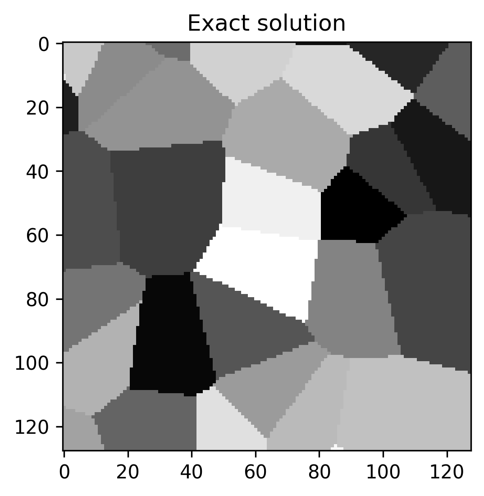
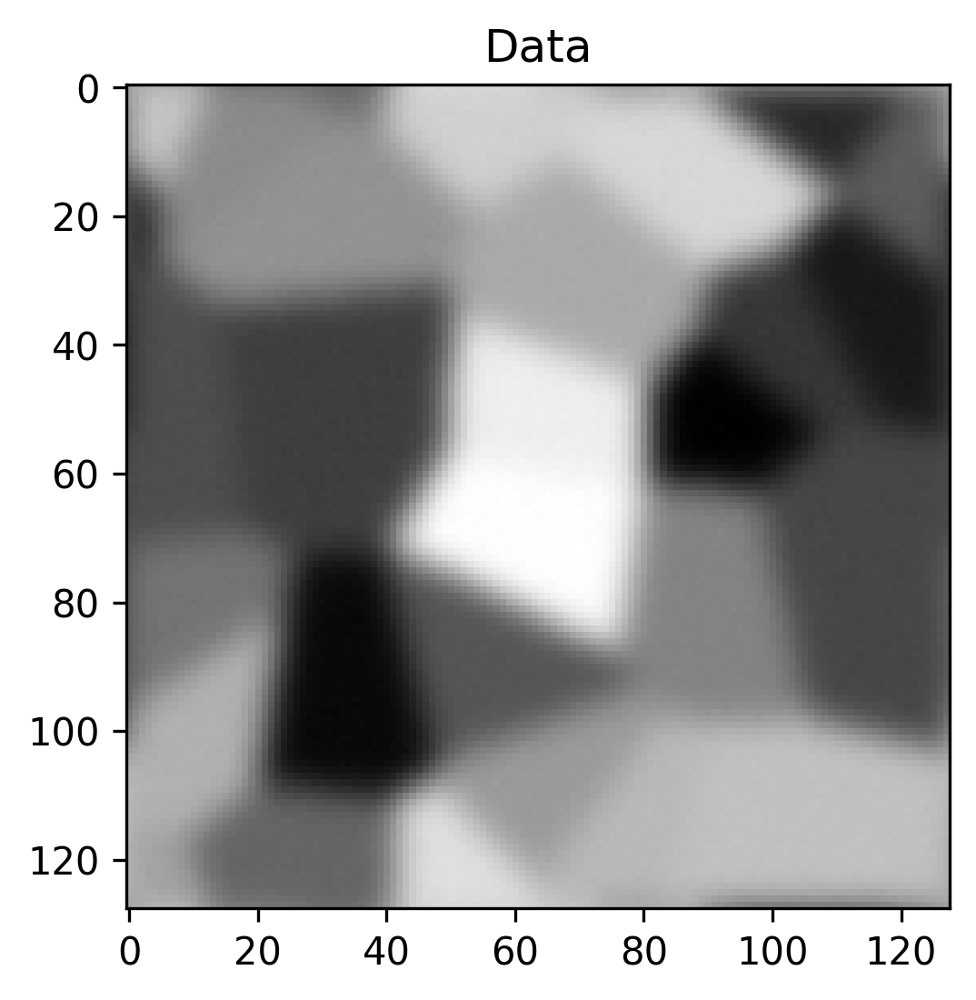
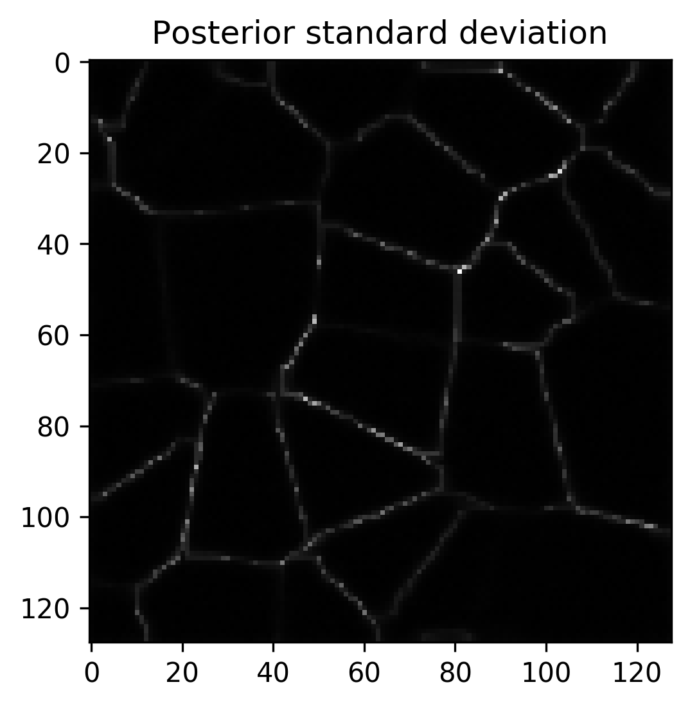

CUQIpy’s Documentation#
Computational Uncertainty Quantification for Inverse Problems in python (CUQIpy) is a python package for modeling and solving inverse problems in a Bayesian inference framework. CUQIpy provides a simple high-level interface to perform UQ analysis of inverse problems, while still allowing full control of the models and methods. The package comes equipped with a number of predefined distributions, samplers, models and test problems and is built to be easily further extended when needed.
This software package is part of the CUQI project funded by the Villum Foundation.
Quick Links: Installation | Tutorials | How-To Guides | Source Repository
{kind=link}
{kind=link}
{kind=link}
{kind=link}
Quick Example - UQ in five steps#
Image deconvolution with uncertainty quantification
# Imports
import numpy as np
import matplotlib.pyplot as plt
from cuqi.testproblem import Deconvolution2D
from cuqi.data import grains
from cuqi.distribution import Laplace_diff, Gaussian
from cuqi.problem import BayesianProblem
# Step 1: Model and data, y = Ax
A, y_data, info = Deconvolution2D.get_components(dim=128, phantom=grains())
# Step 2: Prior, x ~ Laplace_diff(0, 0.01)
x = Laplace_diff(location=np.zeros(A.domain_dim),
scale=0.01,
bc_type='neumann',
physical_dim=2)
# Step 3: Likelihood, y ~ N(Ax, 0.0036^2)
y = Gaussian(mean=A@x, cov=0.0036**2)
# Step 4: Set up Bayesian problem and sample posterior
BP = BayesianProblem(y, x).set_data(y=y_data)
samples = BP.sample_posterior(200)
# Step 5: Analysis
info.exactSolution.plot(); plt.title("Exact solution")
y_data.plot(); plt.title("Data")
samples.plot_mean(); plt.title("Posterior mean")
samples.plot_std(); plt.title("Posterior standard deviation")
{kind=link}

{kind=link}

{kind=link}
{kind=link}

Contributors#
See the list of contributors who participated in this project.